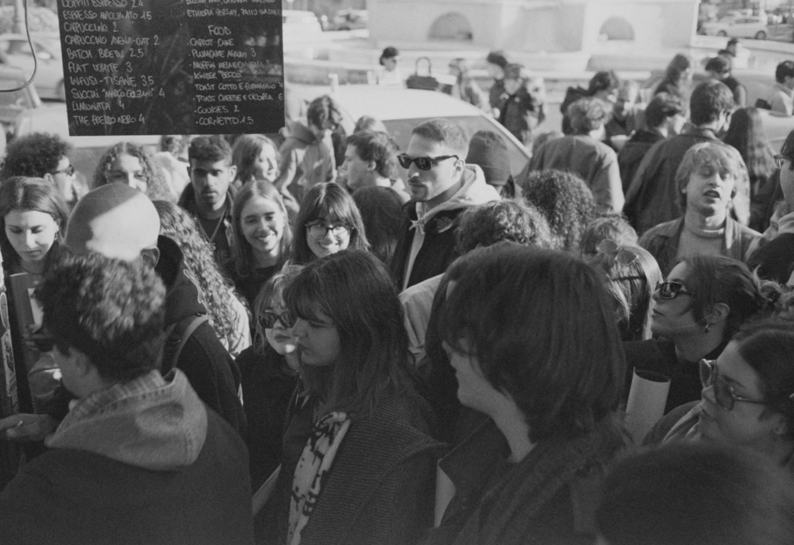
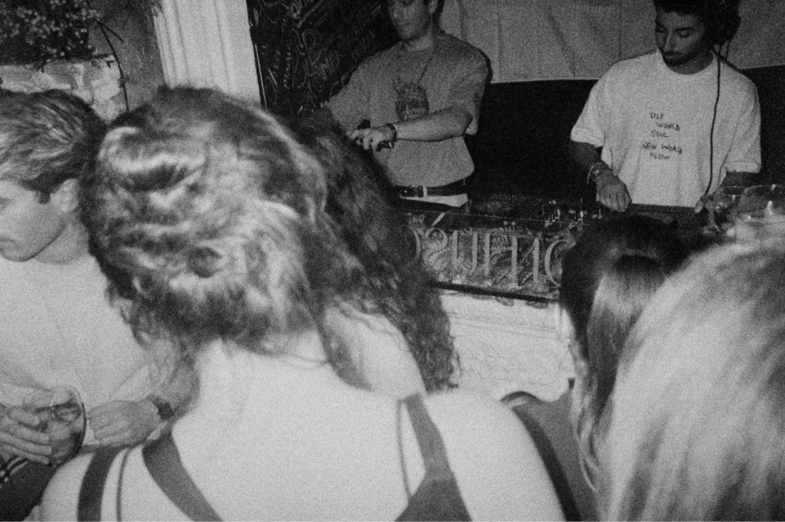

Foto dall'archivio
Creative development — Editorial, Events & Cultural Projects
Simone Carducci, creative development
↓Simone Carducci
Un progetto culturale va seguito intero: dall'idea alla forma, dalle persone al pubblico.
Progetti culturali
Un magazine che ho fondato e un collettivo di cui ho curato la direzione creativa.
Foto in arrivo · img/boheme/cover.jpg
Bohème Magazine2024 – in corso
Bohème Magazine

Magazine indipendente sull'arte emergente e sulle opportunità per artisti. 5.022 follower in 26 mesi, partendo da zero.
Foto in arrivo · img/modi/cover.jpg
Colectivo modì2026
Colectivo modì

Collettivo audiovisivo: serate, DJ set filmati in 4K e un podcast. Dalla consolle al montaggio, fino alla pubblicazione.
Le foto dell'archivio arrivano a breve
Progetti fotografici
Serie su pellicola, tra ritratto e reportage. Pochi scatti, scelti con cura.


Strumenti su misura
Uso l'intelligenza artificiale per costruire gli strumenti che mi servono: progetto il servizio, scrivo le regole e verifico i risultati.
| N. | Progetto | Cosa fa | Strumenti | Anno | Stato |
|---|---|---|---|---|---|
| 01 | Bohème Vedetta | Trova, legge e verifica i bandi per artisti. | Python · Supabase · Claude | 2026 | Attivo |
| 02 | Running Coach | Prepara e corregge il mio piano di corsa, io approvo. | Claude · Intervals.icu | 2026 | In sviluppo |
| 03 | Lettura | Uno strumento di lettura per una persona della mia famiglia. | — | 2026 | Privato |